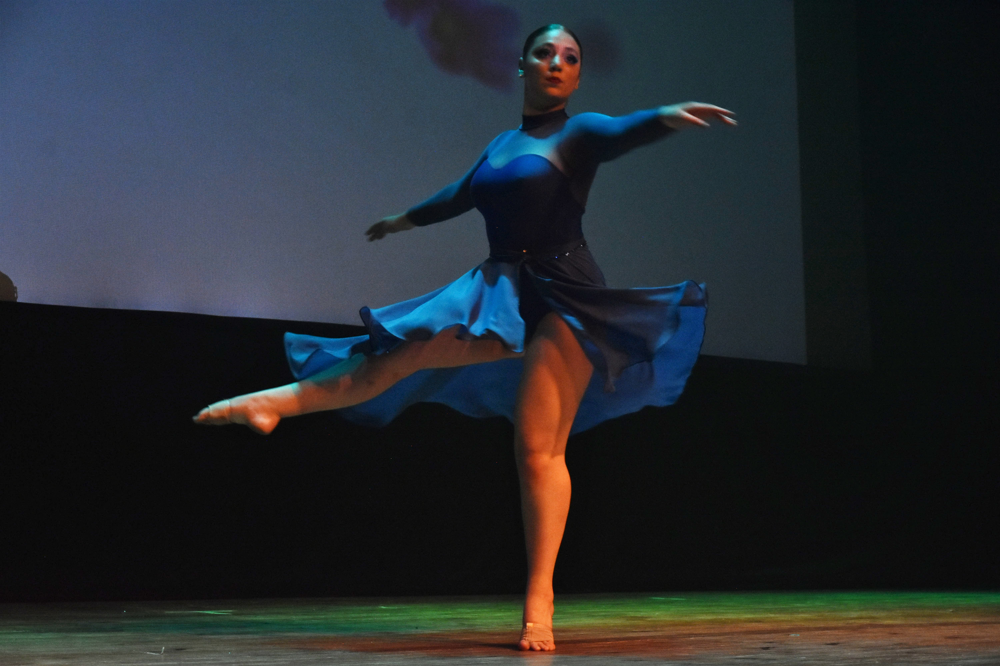
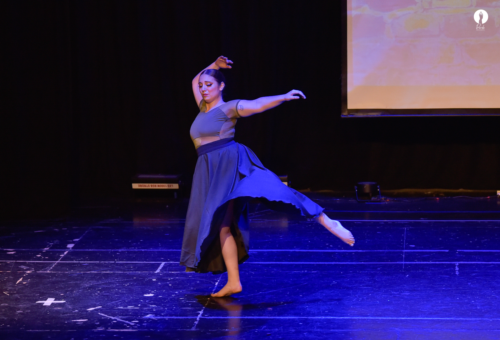
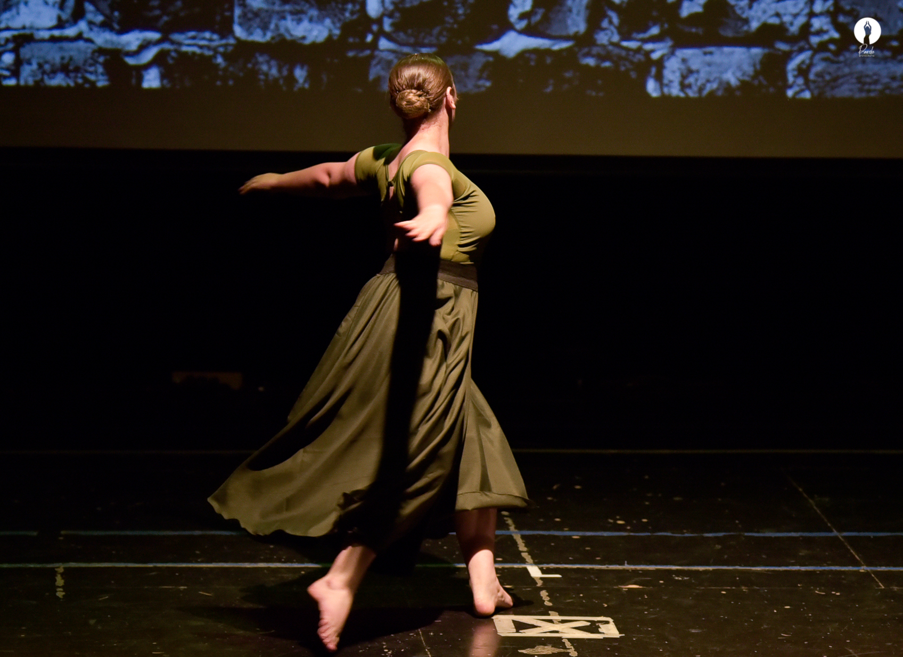
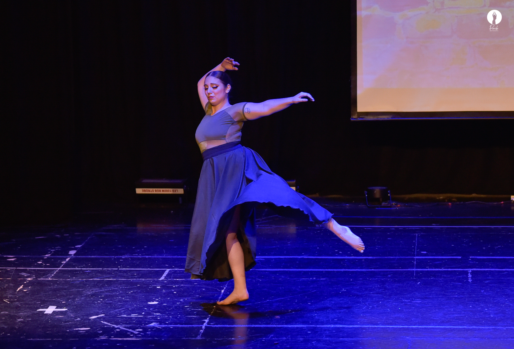
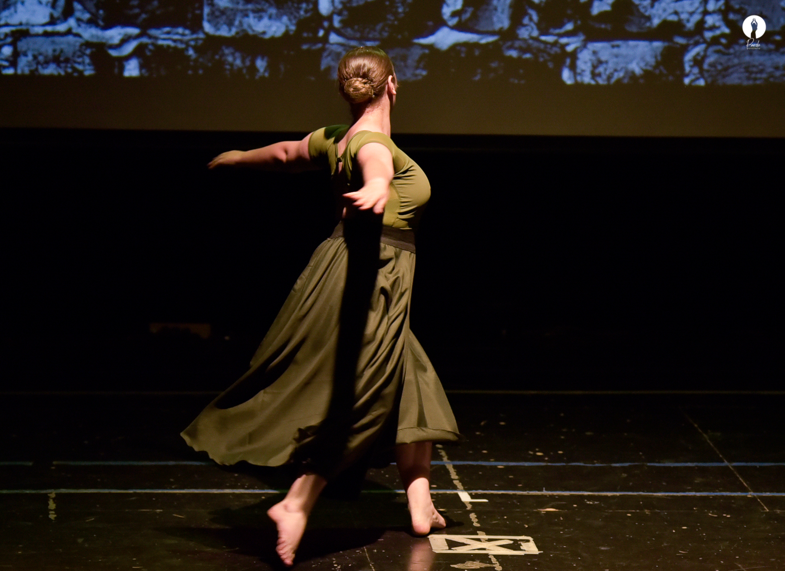
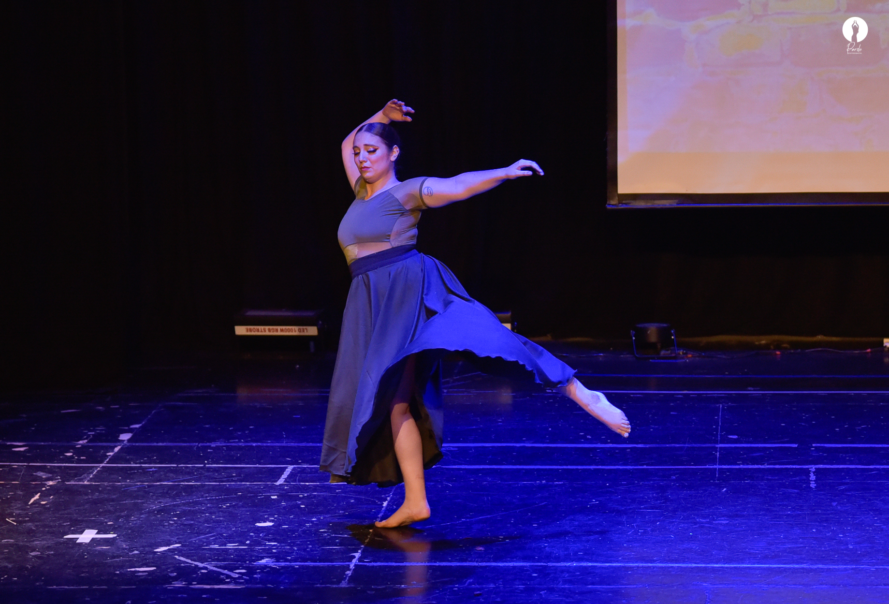
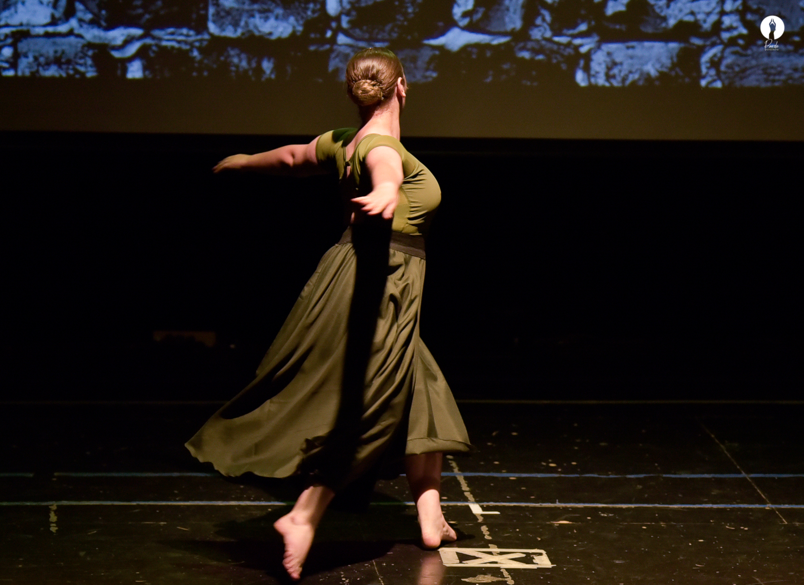
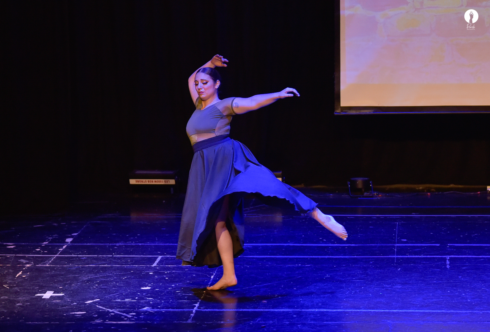
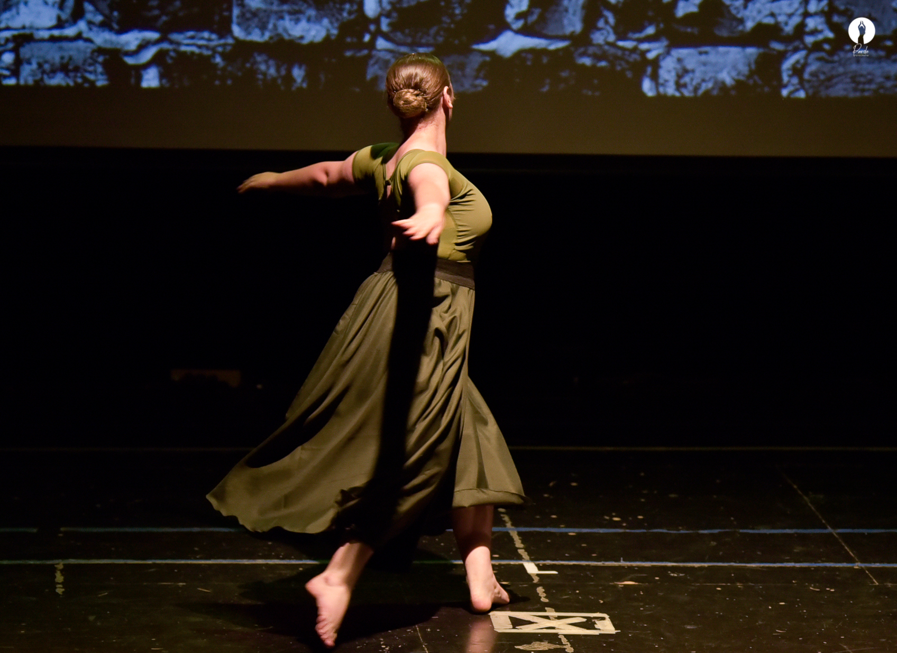

Un poco más de mí

 






Es una destacada artista con un vasto conocimiento y experiencia en múltiples disciplinas de la danza. Su pasión por la danza comenzó a una edad temprana, y a lo largo de los años, ha perfeccionado su arte en varios estilos, incluyendo: Danza Clásica: Con una sólida formación en técnicas de ballet clásico, Luciana ha participado en numerosas producciones, interpretando papeles que requieren tanto gracia como disciplina. Danza Contemporánea: Su versatilidad le permite explorar la expresión y la narrativa en movimiento, fusionando técnicas clásicas con elementos modernos. Ha colaborado con coreógrafos de renombre en proyectos innovadores y ha presentado sus propias coreografías en diversos escenarios. Ballet: Su formación en ballet no solo le ha proporcionado una base técnica sólida, sino que también le ha permitido explorar la capacidad emocional y artística del cuerpo en movimiento. Luciana ha interpretado roles icónicos en ballets como [NOMBRES DE BALLETS FAMOSOS], mostrando tanto destreza técnica como profundidad interpretativa. Otros Estilos: Además de sus especialidades, Luciana es conocida por su habilidad para adaptarse a una amplia gama de estilos de danza, desde jazz y hip hop hasta danzas tradicionales de diferentes culturas. Esta adaptabilidad le ha permitido participar en una variedad de producciones y festivales, destacándose siempre por su expresividad y técnica impecable. A lo largo de su carrera, Luciana ha recibido numerosos premios y reconocimientos por su contribución al arte de la danza. Además de su trabajo en el escenario, también es una dedicada educadora, compartiendo su pasión y conocimientos con la próxima generación de bailarines en su propio estudio, donde imparte clases de diversas disciplinas. Con un compromiso inquebrantable con la excelencia y la innovación, Luciana continúa explorando nuevas formas de expresión artística, siempre buscando inspirar a su audiencia y expandir los límites de lo que es posible en la danza.
Información sobre el estudio, clases, horarios, etc.

